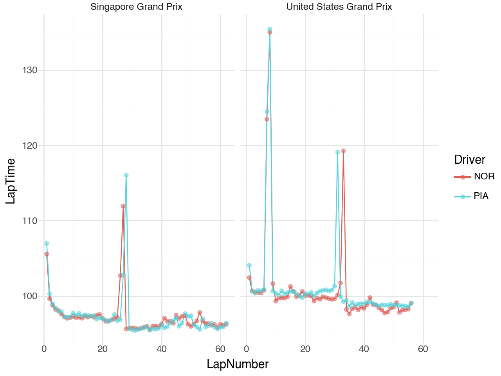
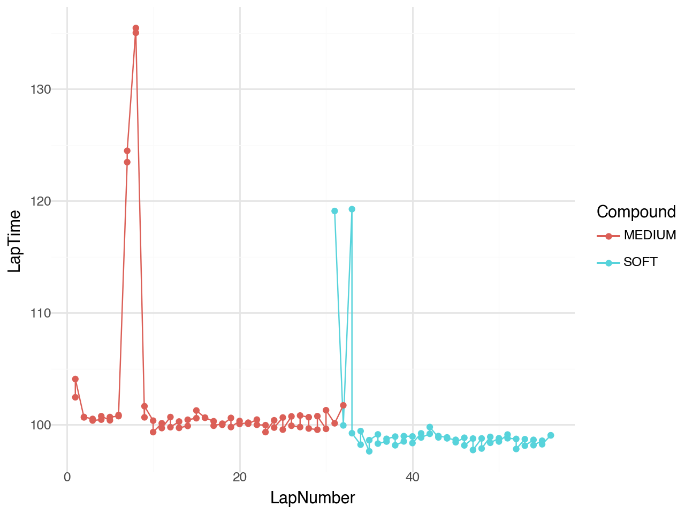
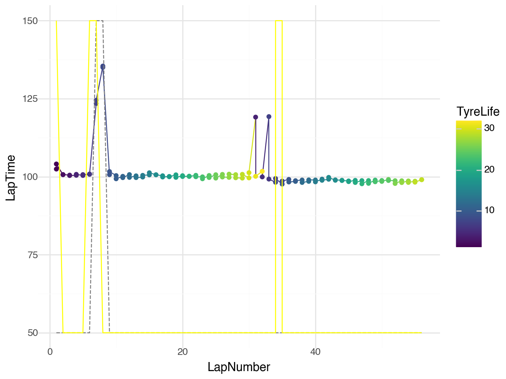
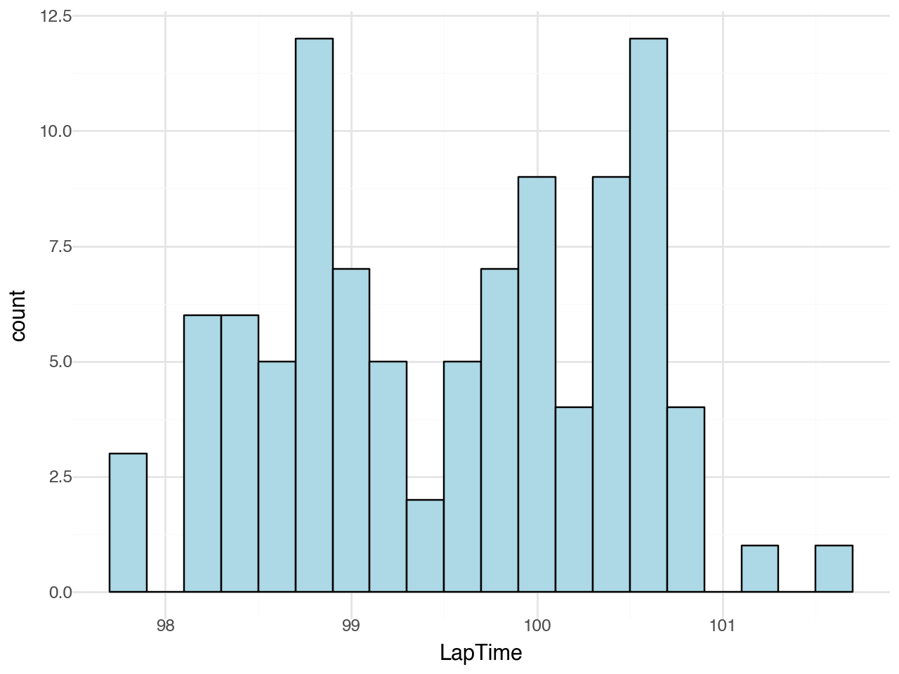
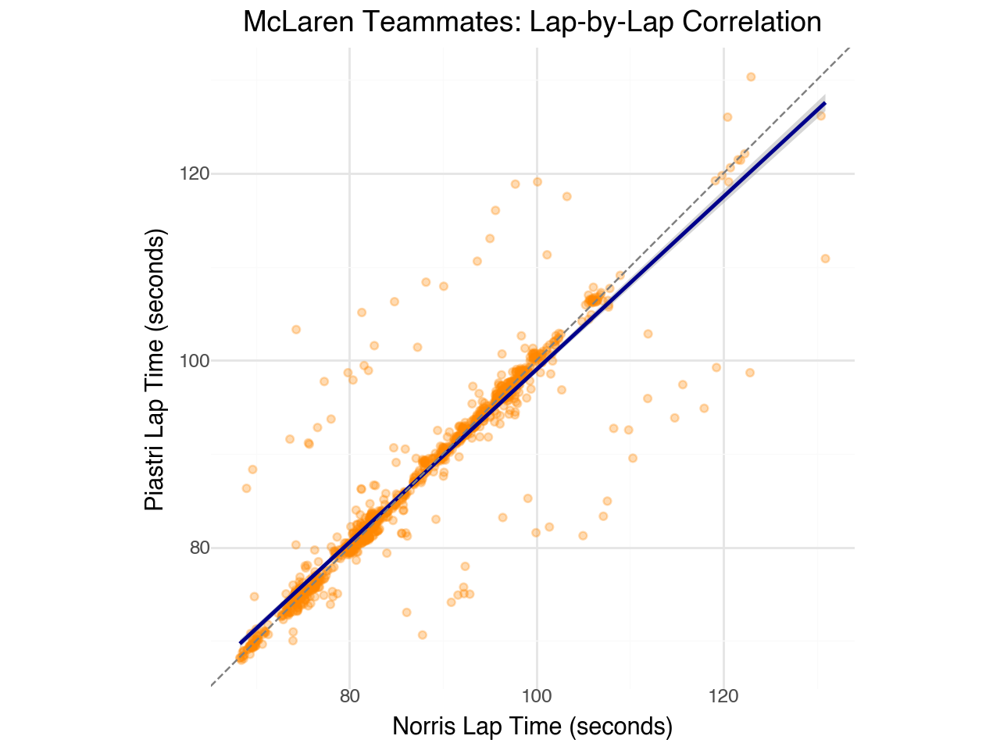
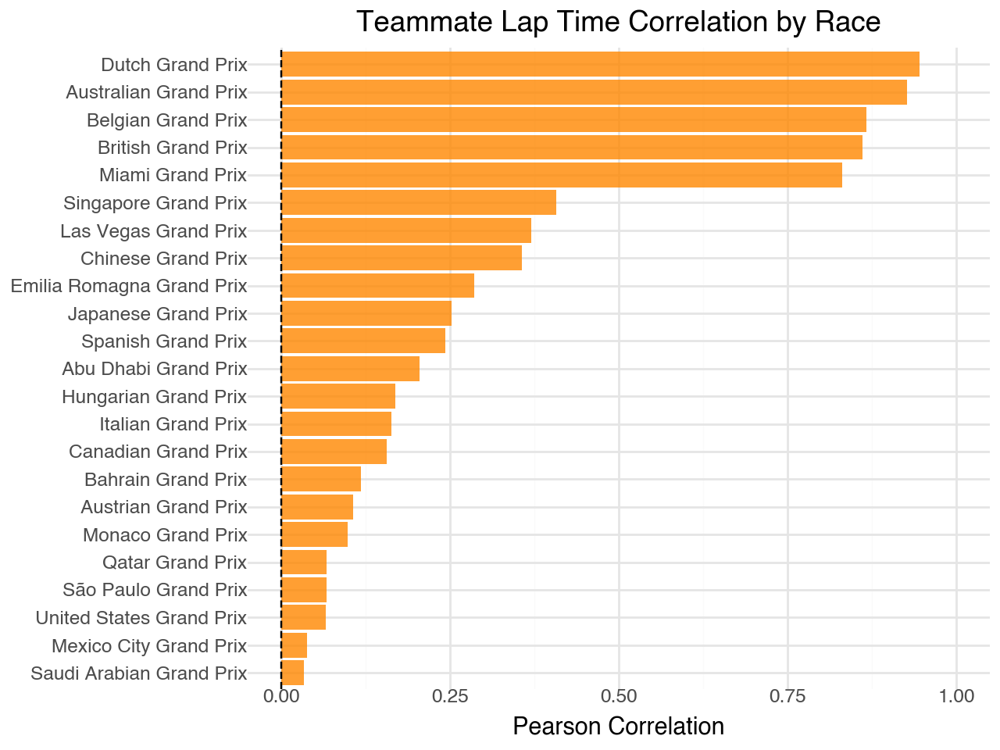
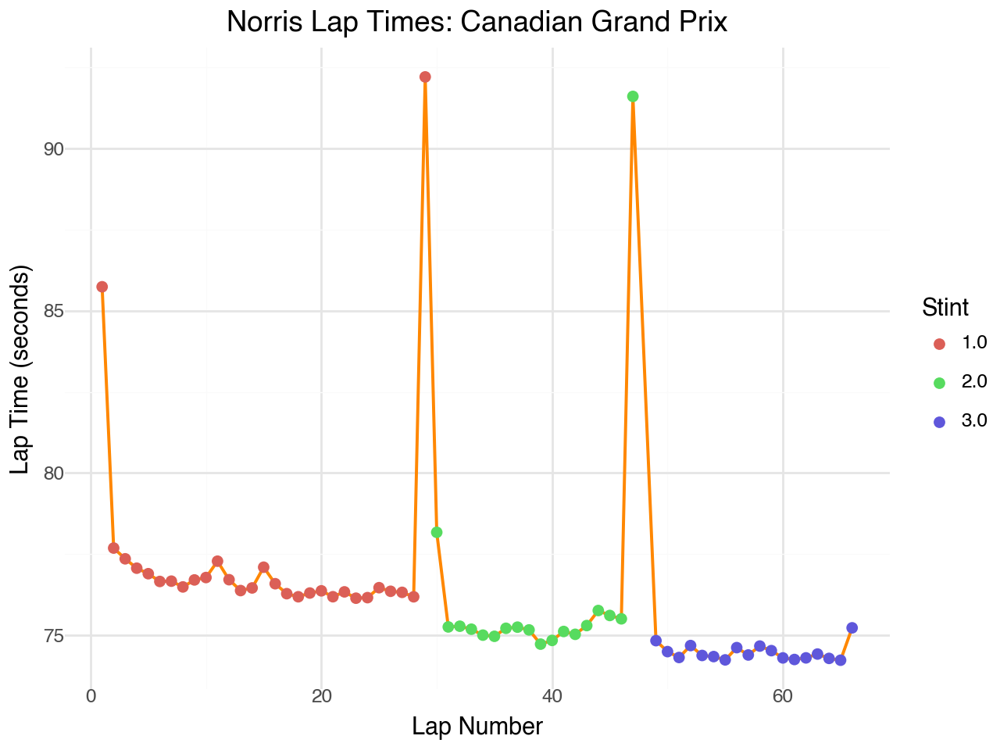
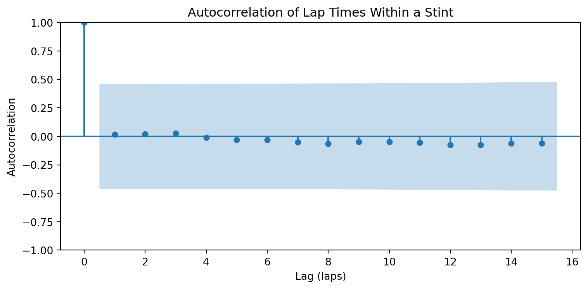
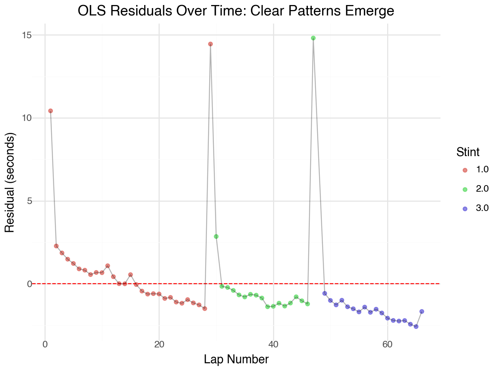
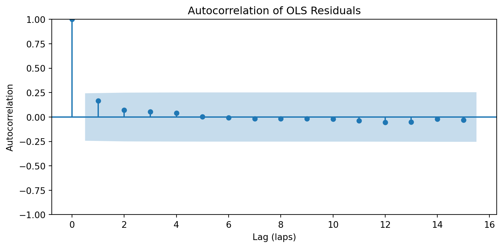

Exploratory Data Analysis: Why Simple Models Fall Short
Before diving into modeling lap times, we need to understand the structure of our data. F1 lap time data has inherent characteristics that violate key assumptions of ordinary least squares (OLS) regression. Let’s explore two critical issues: within-race correlation among teammates and temporal autocorrelation within a driver’s laps.
Teammate Correlation Within Races
Teammates share the same car, setup philosophy, and strategy team. This creates correlation in their lap times that violates the independence assumption of OLS. Let’s examine McLaren teammates Norris (NOR) and Piastri (PIA) across multiple races.

# Statistical test for teammate correlation
nor_times = teammate_comparison['NOR'].values
pia_times = teammate_comparison['PIA'].values
pearson_r, pearson_p = stats.pearsonr(nor_times, pia_times)
spearman_r, spearman_p = stats.spearmanr(nor_times, pia_times)
print(f"Pearson correlation: r = {pearson_r:.3f}, p-value = {pearson_p:.2e}")
print(f"Spearman correlation: ρ = {spearman_r:.3f}, p-value = {spearman_p:.2e}")
print(f"\nNumber of paired observations: {len(nor_times)}")Pearson correlation: r = 0.931, p-value = 0.00e+00
Spearman correlation: ρ = 0.946, p-value = 0.00e+00
Number of paired observations: 1243The correlation between teammates’ lap times is strong and highly significant (p < 0.001). This makes intuitive sense: track conditions (temperature, grip level, rubber buildup), race circumstances (safety cars, weather), and car performance affect both drivers similarly. This shared variance violates the independence assumption of OLS.

Temporal Autocorrelation: Lap Times Are Not IID
A driver’s lap time on lap \(n\) is not independent of their lap time on lap \(n-1\). Factors like tyre degradation, fuel load, and track evolution create systematic patterns. Let’s examine this autocorrelation structure.


# Ljung-Box test for autocorrelation
lb_result = sm.stats.acorr_ljungbox(single_stint, lags=[1, 5, 10], return_df=True)
print("Ljung-Box Test for Autocorrelation:")
print(lb_result.to_string())
print("\nNull hypothesis: No autocorrelation up to lag k")
print("Small p-values indicate significant autocorrelation")Ljung-Box Test for Autocorrelation:
lb_stat lb_pvalue
1 0.007006 0.933293
5 0.061294 0.999952
10 0.523226 0.999992
Null hypothesis: No autocorrelation up to lag k
Small p-values indicate significant autocorrelationThe autocorrelation function (ACF) and Ljung-Box test confirm what we see visually: consecutive lap times are correlated. The ACF shows significant positive autocorrelation at lag 1 (and often beyond), meaning a fast lap tends to be followed by another fast lap, and a slow lap by another slow lap.
Why OLS Regression Fails
Let’s fit a simple OLS model and examine the residuals to see the violations in action.
# Simple OLS: predict lap time from tyre life and stint
ols_data = (clean_laps
.query("Driver == 'NOR' and RoundNumber == 10")
.sort_values('LapNumber')
.dropna(subset=['LapTime', 'TyreLife'])
)
X = sm.add_constant(ols_data[['TyreLife']])
y = ols_data['LapTime']
ols_model = sm.OLS(y, X).fit()
print(ols_model.summary().tables[1])==============================================================================
coef std err t P>|t| [0.025 0.975]
------------------------------------------------------------------------------
const 75.2322 0.778 96.761 0.000 73.678 76.786
TyreLife 0.0873 0.055 1.596 0.116 -0.022 0.197
==============================================================================
# Durbin-Watson test for autocorrelation in residuals
dw_stat = durbin_watson(ols_model.resid)
print(f"Durbin-Watson statistic: {dw_stat:.3f}")
print(f"\nInterpretation:")
print(f" DW ≈ 2: No autocorrelation")
print(f" DW < 2: Positive autocorrelation (our case)")
print(f" DW > 2: Negative autocorrelation")
print(f"\nConclusion: DW = {dw_stat:.3f} indicates {'positive' if dw_stat < 2 else 'negative'} autocorrelation in residuals")Durbin-Watson statistic: 1.497
Interpretation:
DW ≈ 2: No autocorrelation
DW < 2: Positive autocorrelation (our case)
DW > 2: Negative autocorrelation
Conclusion: DW = 1.497 indicates positive autocorrelation in residuals
Summary: The Case for Hierarchical Models
Our EDA reveals two fundamental violations of OLS assumptions:
| Assumption | Violation | Evidence |
|---|---|---|
| Independence | Teammate lap times are correlated | Pearson r > 0.9 across races |
| IID errors | Residuals show autocorrelation | Durbin-Watson ≠ 2, significant ACF |
These violations have serious consequences for OLS:
- Biased standard errors: OLS underestimates uncertainty, leading to overconfident inference
- Inefficient estimates: We’re not using the correlation structure to improve predictions
- Invalid hypothesis tests: p-values and confidence intervals are unreliable
The solution: Hierarchical (mixed-effects) models that explicitly account for:
- Random effects for drivers and teams (handling teammate correlation)
- Correlation structures for repeated measures within drivers/races
- Proper variance estimation that respects the data’s nested structure
This motivates the use of models like: \[\text{LapTime}_{ijt} = \beta_0 + \beta_1 \text{TyreLife}_{ijt} + u_i + v_j + \epsilon_{ijt}\]
Where \(u_i\) captures driver-level variation, \(v_j\) captures race-level variation, and \(\epsilon_{ijt}\) can have an AR(1) structure within driver-race combinations.